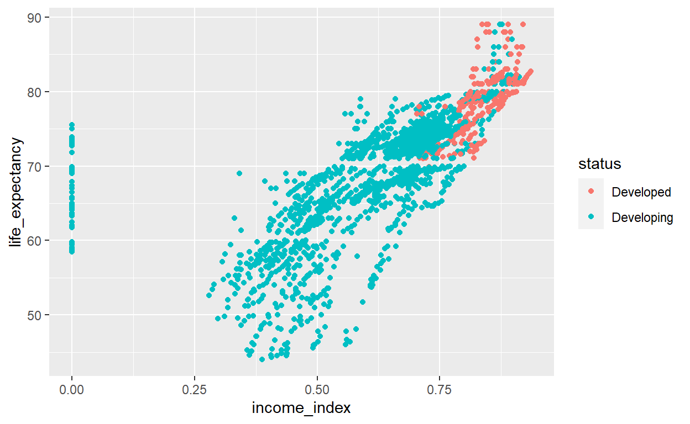
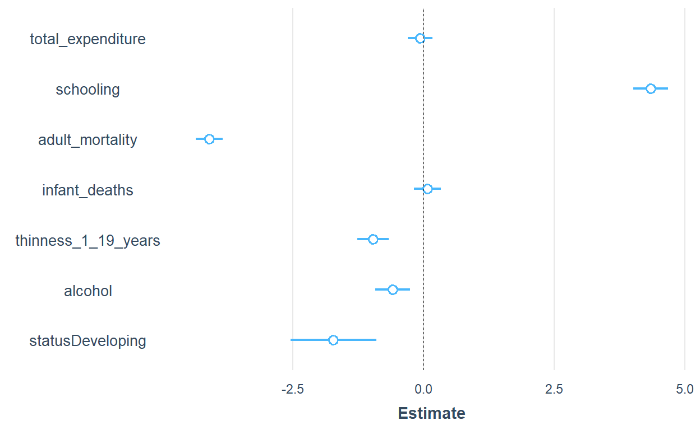
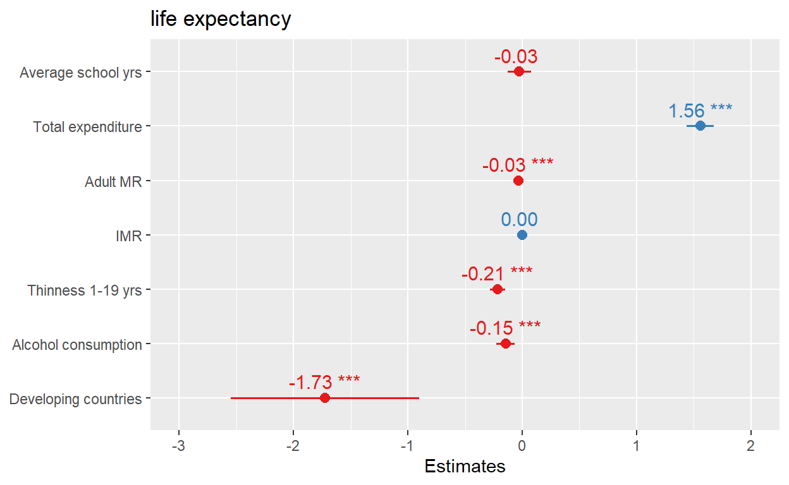
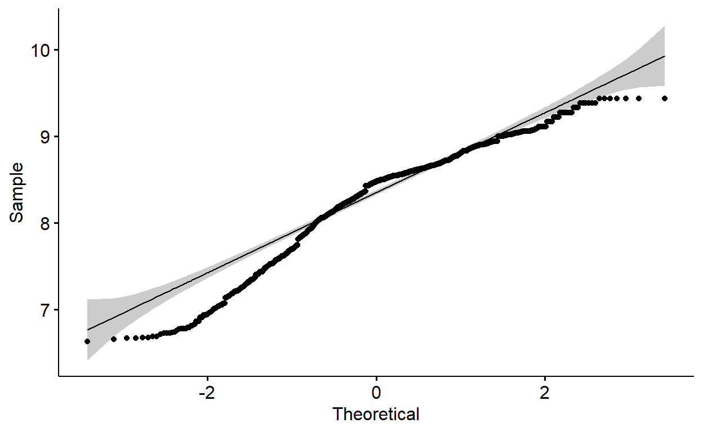
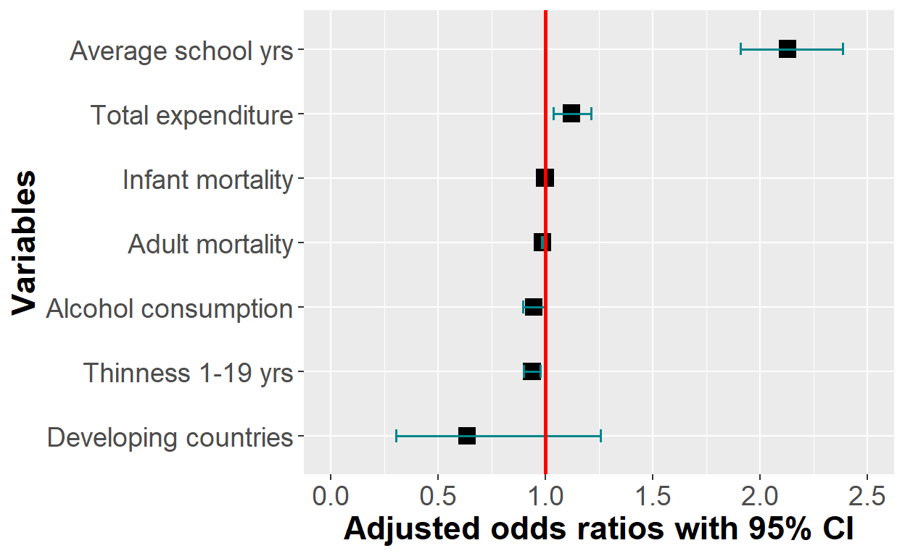

The detail description of this blog is also available in my YouTube channel.. Each content of this blog were based on my three YouTube videos embedded below. I highly recommend watching them.
Part 1
Part 2
Part 3
Motivation
A friend of mine asked me to plot regression coefficients or odds ratios/risk ratios on a forest plots. Since my favorite part of data analysis is visualization, I happily took the challenge. R is a great language for powerful visualizations. As I promised in my previous blog post, I will describe how to visualize model coefficients/OR/RR in R. and their confidence intervals. For today, I will perform linear regression and logistic regression models. Then, I will extract coefficients(for linear regression) and ORs (for logistic regression). Many may prefer to present their analysis in tables. Compared to long and messy tables, plots can help us to quickly see patterns and grasp the the idea.
A great novelist may use fancy words to describe the beauty of Afework Tekele’s “Meskel Flower”, but it can never be as memorable as the 1959’s Afework Tekle’s master piece.
Figure 1: Meskel Flower by Afework Tekle, 1959
Data
The data that I will use for this blog post is from the Global Health Observatory (GHO) data repository. The data is publicly available data and has collected some economic and health related variables a long the years for 193 WHO member states. I will also use this data for my future post about missing value imputation methods. You are free to download a copy of this data from my GitHub repository or from the original source.
I will use the readrpackage to read the csv file and use glm and lm to do the linear regression and logistic regression modeling. I will mention other relevant packages and their use along the way.
Load the data
library(readr) #for reading the csv file
library(dplyr) #for data manipulation
life_expe <- read_csv("life_expectancy.csv")
names(life_expe) [1] "Country"
[2] "Year"
[3] "Status"
[4] "Life expectancy"
[5] "Adult Mortality"
[6] "infant deaths"
[7] "Alcohol"
[8] "percentage expenditure"
[9] "Hepatitis B"
[10] "Measles"
[11] "BMI"
[12] "under-five deaths"
[13] "Polio"
[14] "Total expenditure"
[15] "Diphtheria"
[16] "HIV/AIDS"
[17] "GDP"
[18] "Population"
[19] "thinness 1-19 years"
[20] "thinness 5-9 years"
[21] "Income composition of resources"
[22] "Schooling" Look at the variable names. They are not syntactically valid. That is why R puts variables inside the back tick and forward tick signs. I will use my favorite data cleaning package janitor, to quickly clean that messy variable naming with just one magically powerful function.
library(janitor)
life_expe_data <- clean_names(life_expe)
names(life_expe_data) # All variables names are automagically cleaned! [1] "country"
[2] "year"
[3] "status"
[4] "life_expectancy"
[5] "adult_mortality"
[6] "infant_deaths"
[7] "alcohol"
[8] "percentage_expenditure"
[9] "hepatitis_b"
[10] "measles"
[11] "bmi"
[12] "under_five_deaths"
[13] "polio"
[14] "total_expenditure"
[15] "diphtheria"
[16] "hiv_aids"
[17] "gdp"
[18] "population"
[19] "thinness_1_19_years"
[20] "thinness_5_9_years"
[21] "income_composition_of_resources"
[22] "schooling" glimpse(life_expe_data)Rows: 2,938
Columns: 22
$ country <chr> "Afghanistan", "Afghanistan"~
$ year <dbl> 2015, 2014, 2013, 2012, 2011~
$ status <chr> "Developing", "Developing", ~
$ life_expectancy <dbl> 65.0, 59.9, 59.9, 59.5, 59.2~
$ adult_mortality <dbl> 263, 271, 268, 272, 275, 279~
$ infant_deaths <dbl> 62, 64, 66, 69, 71, 74, 77, ~
$ alcohol <dbl> 0.01, 0.01, 0.01, 0.01, 0.01~
$ percentage_expenditure <dbl> 71.279624, 73.523582, 73.219~
$ hepatitis_b <dbl> 65, 62, 64, 67, 68, 66, 63, ~
$ measles <dbl> 1154, 492, 430, 2787, 3013, ~
$ bmi <dbl> 19.1, 18.6, 18.1, 17.6, 17.2~
$ under_five_deaths <dbl> 83, 86, 89, 93, 97, 102, 106~
$ polio <dbl> 6, 58, 62, 67, 68, 66, 63, 6~
$ total_expenditure <dbl> 8.16, 8.18, 8.13, 8.52, 7.87~
$ diphtheria <dbl> 65, 62, 64, 67, 68, 66, 63, ~
$ hiv_aids <dbl> 0.1, 0.1, 0.1, 0.1, 0.1, 0.1~
$ gdp <dbl> 584.25921, 612.69651, 631.74~
$ population <dbl> 33736494, 327582, 31731688, ~
$ thinness_1_19_years <dbl> 17.2, 17.5, 17.7, 17.9, 18.2~
$ thinness_5_9_years <dbl> 17.3, 17.5, 17.7, 18.0, 18.2~
$ income_composition_of_resources <dbl> 0.479, 0.476, 0.470, 0.463, ~
$ schooling <dbl> 10.1, 10.0, 9.9, 9.8, 9.5, 9~The above result shows the data has about 22 columns(variables) and 2928 rows(observations). Let me do a quick exploratory data analysis .
library(DataExplorer)
plot_missing(life_expe_data) 
The missing value exploration plot shows, we don’t have missing value of more than 25% for each variable. We don’t have any variable that will be dropped using a complete deletion. In fact, the missing values are tolerable and performing imputation strategies is practically possible. I will be back on another blog post to perform missing value imputations using tree-based methods or KNN algorithms. For now, I will simply drop all observations with missing values!
life_exp_narm <- life_expe_data[complete.cases(life_expe_data), ] # This deletes all rows with missing valuesThere is another important function from the DataExplorerpackage to do a quick grasp of the distributions of my variables.
plot_histogram(life_exp_narm) # Almost all variables are skewed

Modeling
Since, the goal of this post is to plot model coefficients and confidence intervals in a forest plot, I will not go deeper in explaining models.I will use life expectancy as a dependent variable and use some predictors to do my linear models. Before that, I will do one quick visualization.
library(ggplot2) #for awesome plotting
# let me rename the income variable
names(life_exp_narm)[names(life_exp_narm) == "income_composition_of_resources"] <- "income_index"
ggplot(life_exp_narm, aes(x=income_index, y=life_expectancy, col=status)) +
geom_point() 
The plot shows, as income index increases, life expectancy increases. In addition, the developed countries have higher income level and high life expectancy. However, there is really one very important thing visible in this plot. The income_index variable has a lot of zeros values.
summary(life_exp_narm$income_index) Min. 1st Qu. Median Mean 3rd Qu. Max.
0.0000 0.5090 0.6730 0.6316 0.7510 0.9360 sum(life_exp_narm$income_index==0) [1] 48See, 48 observations have 0 value on income_index. That must be missing data. I will filter out the observations with 0 values in this variable.
Now, we can visualize again with a little more tweaking.
life_exp_new %>%
ggplot(aes(x=income_index, y=life_expectancy, col=status)) +
geom_point() + geom_smooth(method="lm", col="blue") 
We have now somehow clean data to start our modeling process. We may need to see the relations ship of income index with other variables. For now, I will skip that and directly proceed to my modeling.
Different ways, similar results
One of the great things, you can enjoy with R is there are many ways of doing the same thing.
lm1 <- lm(life_expectancy ~ total_expenditure + log(income_index) + adult_mortality + infant_deaths + alcohol + thinness_1_19_years + thinness_5_9_years + schooling + infant_deaths + status,data=life_exp_new)
# We can do the same task using glm but defining the family argument as "gaussian"
lm2 <- glm(life_expectancy ~ total_expenditure + log(income_index) + adult_mortality + infant_deaths + alcohol + thinness_1_19_years + thinness_5_9_years + schooling + infant_deaths + status,
data=life_exp_new, family = gaussian)See the model outputs
The two approach produce similar outputs. But,lm has a shorter code than glm. So, many ppl prefer to use lm() for linear regression.
library(jtools) #for nice table model output
summ(lm1,confint = TRUE, digits = 3, vifs = TRUE) # add vif to see if variance inflation factor is greater than 2MODEL INFO:
Observations: 1601
Dependent Variable: life_expectancy
Type: OLS linear regression
MODEL FIT:
F(9,1591) = 883.694, p = 0.000
R² = 0.833
Adj. R² = 0.832
Standard errors: OLS
----------------------------------------------------------------------
Est. 2.5% 97.5% t val. p
------------------------- -------- -------- -------- --------- -------
(Intercept) 94.878 92.149 97.606 68.214 0.000
total_expenditure 0.227 0.144 0.311 5.365 0.000
log(income_index) 29.194 27.340 31.047 30.897 0.000
adult_mortality -0.021 -0.023 -0.020 -23.933 0.000
infant_deaths -0.001 -0.002 0.001 -0.653 0.514
alcohol -0.246 -0.310 -0.181 -7.494 0.000
thinness_1_19_years 0.081 -0.024 0.186 1.507 0.132
thinness_5_9_years -0.186 -0.290 -0.083 -3.546 0.000
schooling -0.512 -0.674 -0.351 -6.220 0.000
statusDeveloping -2.289 -2.940 -1.637 -6.890 0.000
----------------------------------------------------------------------
---------------------------------
VIF
------------------------- -------
(Intercept)
total_expenditure 1.138
log(income_index) 6.779
adult_mortality 1.540
infant_deaths 1.369
alcohol 2.131
thinness_1_19_years 7.147
thinness_5_9_years 6.961
schooling 6.389
statusDeveloping 1.716
---------------------------------summ(lm2,confint = TRUE, digits = 3, vifs=TRUE)MODEL INFO:
Observations: 1601
Dependent Variable: life_expectancy
Type: Linear regression
MODEL FIT:
<U+03C7>²(9) = 105053.208, p = 0.000
Pseudo-R² (Cragg-Uhler) = 0.834
Pseudo-R² (McFadden) = 0.249
AIC = 8687.410, BIC = 8746.572
Standard errors: MLE
----------------------------------------------------------------------
Est. 2.5% 97.5% t val. p
------------------------- -------- -------- -------- --------- -------
(Intercept) 94.878 92.151 97.604 68.214 0.000
total_expenditure 0.227 0.144 0.310 5.365 0.000
log(income_index) 29.194 27.342 31.046 30.897 0.000
adult_mortality -0.021 -0.023 -0.020 -23.933 0.000
infant_deaths -0.001 -0.002 0.001 -0.653 0.514
alcohol -0.246 -0.310 -0.181 -7.494 0.000
thinness_1_19_years 0.081 -0.024 0.186 1.507 0.132
thinness_5_9_years -0.186 -0.289 -0.083 -3.546 0.000
schooling -0.512 -0.674 -0.351 -6.220 0.000
statusDeveloping -2.289 -2.940 -1.638 -6.890 0.000
----------------------------------------------------------------------
---------------------------------
VIF
------------------------- -------
(Intercept)
total_expenditure 1.138
log(income_index) 6.779
adult_mortality 1.540
infant_deaths 1.369
alcohol 2.131
thinness_1_19_years 7.147
thinness_5_9_years 6.961
schooling 6.389
statusDeveloping 1.716
---------------------------------
Estimated dispersion parameter = 13.209 Seeing the vif value above 2 is evidence of multicollinearity in our model. Let’s just use the HMISC package to find all correlation values for the variables in the model.
dat <- life_exp_narm %>%
select(total_expenditure, income_index, adult_mortality , infant_deaths ,
alcohol, thinness_1_19_years, thinness_5_9_years, schooling)
#library(corrplot)
library(Hmisc)
cor <- rcorr(as.matrix(dat))
r <- cor$r %>% as.table()
r total_expenditure income_index adult_mortality
total_expenditure 1.00000000 0.18365319 -0.08522653
income_index 0.18365319 1.00000000 -0.44220329
adult_mortality -0.08522653 -0.44220329 1.00000000
infant_deaths -0.14695112 -0.13475386 0.04245024
alcohol 0.21488509 0.56107433 -0.17553509
thinness_1_19_years -0.20987232 -0.45367885 0.27223004
thinness_5_9_years -0.21786479 -0.43848372 0.28672288
schooling 0.24378345 0.78474058 -0.42117052
infant_deaths alcohol thinness_1_19_years
total_expenditure -0.14695112 0.21488509 -0.20987232
income_index -0.13475386 0.56107433 -0.45367885
adult_mortality 0.04245024 -0.17553509 0.27223004
infant_deaths 1.00000000 -0.10621692 0.46341526
alcohol -0.10621692 1.00000000 -0.40375499
thinness_1_19_years 0.46341526 -0.40375499 1.00000000
thinness_5_9_years 0.46190792 -0.38620819 0.92791344
schooling -0.21437190 0.61697481 -0.49119921
thinness_5_9_years schooling
total_expenditure -0.21786479 0.24378345
income_index -0.43848372 0.78474058
adult_mortality 0.28672288 -0.42117052
infant_deaths 0.46190792 -0.21437190
alcohol -0.38620819 0.61697481
thinness_1_19_years 0.92791344 -0.49119921
thinness_5_9_years 1.00000000 -0.47248203
schooling -0.47248203 1.00000000Or more beautifully we can plot he correlation values using the pairs.panels function from the psych package. We can have a good correlation matrix of our variables.
library(psych)
pairs.panels(dat)
There is a high correlation(r=.93) between thinness_1_19_years and thinness_5_9_years, schooling and income_index (r=0.78), schooling and alchohol. To deal with this multicollinearity problem, I will just drop one of the collinear variables because they just add a redundenent information in my model. Ideally, one can do a stepwise regression, or best subsets regression and then choose the model that has the highest R-squared value. But, we are simply dropping one of the variables. Let me drop thinness_5_9_years (the variable thinness_1_19_years actually carry the other variable: thinness_5_9_years), and income_index variables from my linear model and redo my analysis.
lm3 <- lm(life_expectancy ~ total_expenditure +
schooling + adult_mortality + infant_deaths + thinness_1_19_years +
alcohol + status,
data=life_exp_new)
summ(lm3,confint = TRUE, digits = 3, vifs=TRUE) MODEL INFO:
Observations: 1601
Dependent Variable: life_expectancy
Type: OLS linear regression
MODEL FIT:
F(7,1593) = 623.404, p = 0.000
R² = 0.733
Adj. R² = 0.731
Standard errors: OLS
----------------------------------------------------------------------
Est. 2.5% 97.5% t val. p
------------------------- -------- -------- -------- --------- -------
(Intercept) 59.180 57.252 61.107 60.223 0.000
total_expenditure -0.027 -0.130 0.076 -0.509 0.611
schooling 1.558 1.440 1.677 25.746 0.000
adult_mortality -0.033 -0.035 -0.031 -31.411 0.000
infant_deaths 0.001 -0.002 0.003 0.566 0.571
thinness_1_19_years -0.214 -0.280 -0.148 -6.373 0.000
alcohol -0.146 -0.227 -0.065 -3.532 0.000
statusDeveloping -1.725 -2.548 -0.902 -4.111 0.000
----------------------------------------------------------------------
---------------------------------
VIF
------------------------- -------
(Intercept)
total_expenditure 1.090
schooling 2.153
adult_mortality 1.288
infant_deaths 1.345
thinness_1_19_years 1.736
alcohol 2.110
statusDeveloping 1.709
---------------------------------Now, I don’t have much evidence of multicollinearity (see the vif values). BINGO!
There are many ways of visualizing my model outputs.
library(broom)
library(cli)
model_output <- tidy(lm3)
out_conf <- tidy(lm3, conf.int = TRUE)
library(forestmangr)
lm_model_out <- round_df(out_conf, digits=2)
lm_model_out <- lm_model_out[-1,] #remove the intercept
# Now plot them
ggplot(lm_model_out, aes(x=reorder(term, estimate), y=estimate)) +
geom_errorbar(aes(ymin=conf.low, ymax=conf.high),
width = 0.2,size = 1,
position = "dodge", color="turquoise4") +
geom_hline(yintercept = 0, color = "red", size = 1) +
geom_point() + coord_flip() 
Retrieve coefficients and their 95% CI
coef <- coef(lm3)
ConfidenceInterval <- confint(lm3)
coef_confint <- cbind(coef, ConfidenceInterval) %>% as.data.frame()
coef_confint <- coef_confint %>% mutate(variable=rownames(coef_confint))
library(plyr)
coef_confint <- rename(coef_confint,c("coef" = "Beta",
`2.5 %` = "lower_bound",
`97.5 %` = "upper_bound"))
# We don't need to plot the intercept. We can remove it from our data
# Reorder variables
col_order <- c("variable", "Beta", "lower_bound", "upper_bound")
coef_confint <- coef_confint[, col_order] #reorder variables in the data frame
coef_confint <- coef_confint %>%
mutate_if(is.numeric, round, digits = 2) # round numeric into two significant digits Visualize the coefficients once again
Now, I have everything to visualize my coefficients and their respective confidence intervals in a forest plot.
plot_lm <- coef_confint[-1,] %>% #remove row number 1 (The intercept)
ggplot(aes(x=reorder(variable, Beta), y=Beta)) +
geom_point(shape = 15,
size = 4, width = 0.1,
position = "dodge", color="black") +
geom_errorbar(aes(ymin = lower_bound,
ymax = upper_bound),
width = 0.2,
size = 1,
position = "dodge", color="turquoise4") +
theme(axis.title = element_text(face = "bold")) +
xlab("Variables") + ylab("Beta coeffecients with 95% CI") +
coord_flip(ylim = c(-2.5, 1.6)) +
geom_hline(yintercept = 0, color = "red", size = 1) +
theme(axis.title = element_text(size = 17)) +
theme(axis.text = element_text(size = 14))
plot_lm
The y-axis tick labels can be improved to correctly define the names. I can do that by bz renaming mz axis tick-labels in my ggplot code.
plot_lm + scale_x_discrete(breaks = c("statusDeveloping",
"thinness_1_19_years", "alcohol",
"adult_mortality","total_expenditure",
"infant_deaths", "schooling"),
labels = c("Developing countries", "Thinness 1-19 yrs",
"Alcohol consumption",
"Adult MR", "Total expenditure",
"IMR",
"Average school yrs")) 
There are also a handful of specialized r packages which are dedicated to do this job with a much shorter lines of codes. In the following part, I will use some of the packages to plot my model coefficients. Of the many packages available, broom.mixed, and sJPlot, coefplot,dotwhisker, modelsummary, etc are some of them. I will try broom.mixed and sJPlot
library(broom.mixed)
plot_summs(lm3, scale = TRUE, size=3) plot_summs(lm1, scale = TRUE, plot.distributions = TRUE,
inner_ci_level = .9,
color.class = "darkgreen") 
One advantage of broom.mixedis it helps you visualize the distribution of the variable and besides the coefficient and the confidence interval. That helps to have a rough overview of normality.
The variable names in the plots can be edited. But, for the sake of time, I am not going to do that.
library(sjPlot)
plot_model(lm3, show.values = TRUE, value.offset = 0.3,
axis.labels=c("Developing countries", "Alcohol consumption",
"Thinness 1-19 yrs","IMR", "Adult MR","Total expenditure",
"Average school yrs"))
With SjPlot, it is much easier to label the coefficients in the plot.
One more tip
This is not the same regression as we did above. I used a new set of predictors. The following package can do the modeling calculation, tabulation and plotting all together. For linear regression, you can use coef_plot, for logistic regression or_plot, and hr_plot for hazard ratios, etc. I recently discovered this package in stack overflow.
library(finalfit)
explanatory = c( "alcohol",
"thinness_1_19_years",
"hiv_aids",
"total_expenditure", "schooling")
dependent = "life_expectancy"
life_exp_new %>%
coefficient_plot(dependent, explanatory, table_text_size=3,
title_text_size=12,
plot_opts=list(xlab("Beta, 95% CI"),
theme(axis.title = element_text(size=12))))
But, is linear regression model the right choice for our data. Did my model pass all key assumptions. I don’t think so. Before I do anything I need to check whether the linear regression assumptions are fulfilled. To reject or accept our model, it must pass all the relevant assumptions. gvlma is a good package for checking that.
Call:
lm(formula = life_expectancy ~ total_expenditure + schooling +
adult_mortality + infant_deaths + thinness_1_19_years + alcohol +
status, data = life_exp_new)
Coefficients:
(Intercept) total_expenditure schooling
59.1795303 -0.0267339 1.5582409
adult_mortality infant_deaths thinness_1_19_years
-0.0325335 0.0006165 -0.2137415
alcohol statusDeveloping
-0.1458388 -1.7250085
ASSESSMENT OF THE LINEAR MODEL ASSUMPTIONS
USING THE GLOBAL TEST ON 4 DEGREES-OF-FREEDOM:
Level of Significance = 0.05
Call:
gvlma(x = lm3)
Value p-value Decision
Global Stat 1729.57 0.000e+00 Assumptions NOT satisfied!
Skewness 409.04 0.000e+00 Assumptions NOT satisfied!
Kurtosis 1245.83 0.000e+00 Assumptions NOT satisfied!
Link Function 37.21 1.059e-09 Assumptions NOT satisfied!
Heteroscedasticity 37.49 9.187e-10 Assumptions NOT satisfied!All of the linear regression assumptions are violated. The above model is incorrect. Therefore, I have to decide whether to transform my data using transformation methods or go for other models. Let me check some details about the dependent variable using the psych package,
hist(life_exp_narm$life_expectancy)
vars n mean sd median trimmed mad min max range skew
X1 1 1649 69.3 8.8 71.7 69.91 7.56 44 89 45 -0.63
kurtosis se
X1 0.03 0.22My dependent variable is negatively(left) skewed. For left(negatively) skewed distribution, square root, cube root or logarithmic transformation can help me achieve normality. I will check that one by one using qqplot. But, for a nicer version of qqplots, I prefer to use the ggpubr package.

The qqplots above show many of the points fall outside the reference line indicating the data is not normally distributed. Let me transform all of them using square root, cube root and logarithm and investigate qqplots. After that, I will run shapiro wilk normality test.
library(ggpubr)
library(patchwork)
p1 <- ggqqplot(sqrt(life_exp_new$life_expectancy))
p2 <- ggqqplot((life_exp_new$life_expectancy)^1/3)
p3 <- ggqqplot(log(life_exp_new$life_expectancy))
p1 + p2 + p3
shapiro.test(sqrt(life_exp_new$life_expectancy))
Shapiro-Wilk normality test
data: sqrt(life_exp_new$life_expectancy)
W = 0.94587, p-value < 2.2e-16shapiro.test((life_exp_new$life_expectancy)^1/3)
Shapiro-Wilk normality test
data: (life_exp_new$life_expectancy)^1/3
W = 0.9605, p-value < 2.2e-16shapiro.test(log(life_exp_new$life_expectancy))
Shapiro-Wilk normality test
data: log(life_exp_new$life_expectancy)
W = 0.92811, p-value < 2.2e-16Apparently, the p-values for Shapiro Wilk normality test for all transformed data are rather much lower than 0.05. The null hypothesis (H0) of Shapiro test is “data is normally distributed”. Therefore, we will need to reject the null hypothesis and conclude the data is not normally distributed. A pity!
With that we can reject our model(lm3) and it is not relevant for our data. I am now done with linear models here. I am angry at them. What else can I do? There are many many alternatives. For example: Logistic regression. But, I should get my data ready for that.
Logistic regression
I will use glm function to run logistic regression. However, I need to dichotomize my life expectancy variable into high and low life expectancy categories and attach numeric value label my binary category(something like: high,low/1,0. I need to split my outcome variable into two categories: high and low. Since, the data doesn’t follow normal distribution as evidenced above, I should use median split which means every life expectancy value above the median will have “high” label else “low” label.
summary(life_exp_new$life_expectancy) #median is 71.8 Min. 1st Qu. Median Mean 3rd Qu. Max.
44.00 64.60 71.80 69.39 75.00 89.00 Median split
life_exp_new$life_exp_cat <- ifelse(life_exp_new$life_expectancy <= 71.8, "0", "1")
life_exp_new$life_exp_cat <- factor(life_exp_new$life_exp_cat, levels = c(0,1),
labels = c("low", "high"))
table(life_exp_new$life_exp_cat)
low high
802 799 logistic_reg <- glm(life_exp_cat ~ total_expenditure +
schooling + adult_mortality + infant_deaths + thinness_1_19_years +
alcohol + status, data=life_exp_new, family = binomial)
summary(logistic_reg)
Call:
glm(formula = life_exp_cat ~ total_expenditure + schooling +
adult_mortality + infant_deaths + thinness_1_19_years + alcohol +
status, family = binomial, data = life_exp_new)
Deviance Residuals:
Min 1Q Median 3Q Max
-3.1008 -0.4497 -0.0110 0.5094 2.2990
Coefficients:
Estimate Std. Error z value Pr(>|z|)
(Intercept) -7.0055557 0.8329181 -8.411 < 2e-16 ***
total_expenditure 0.1157071 0.0398235 2.905 0.00367 **
schooling 0.7555904 0.0566505 13.338 < 2e-16 ***
adult_mortality -0.0128377 0.0010746 -11.946 < 2e-16 ***
infant_deaths -0.0009023 0.0009796 -0.921 0.35704
thinness_1_19_years -0.0633472 0.0215176 -2.944 0.00324 **
alcohol -0.0547746 0.0278457 -1.967 0.04917 *
statusDeveloping -0.4520548 0.3583898 -1.261 0.20718
---
Signif. codes: 0 '***' 0.001 '**' 0.01 '*' 0.05 '.' 0.1 ' ' 1
(Dispersion parameter for binomial family taken to be 1)
Null deviance: 2219.5 on 1600 degrees of freedom
Residual deviance: 1097.5 on 1593 degrees of freedom
AIC: 1113.5
Number of Fisher Scoring iterations: 6Extract Odds ratios and confidence intervals
require(MASS)
or_CI <- round(exp(cbind(coef(logistic_reg), confint(logistic_reg))), digits=3) %>%
as.data.frame()
or_CI <- or_CI %>%
mutate(variable=rownames(or_CI)) # extract the variables from rownames
or_CI <- rename(or_CI, c("V1" = "AOR",
`2.5 %` = "lower_bound",
`97.5 %` = "upper_bound"))
# We don't need to plot the intercept. We can remove it from our data
# Reorder variables
col_order <- c("variable", "AOR", "lower_bound", "upper_bound")
or_CI <- or_CI[, col_order] #reorder variables in the data frameNow, I can plot the odds ratios and confidence intervals exactly as I did for my linear model coefficients.
plot_logit_model <- or_CI[-1,] %>% #remove row number 1 (The intercept)
ggplot(aes(x = reorder(variable, AOR), y = AOR)) +
geom_point(shape = 15,
size = 4, width = 0.1,
position = "dodge", color="black") +
geom_errorbar(aes(ymin = lower_bound,
ymax = upper_bound),
width = 0.2,
size = 0.7,
position = "dodge", color="turquoise4") +
theme(axis.title = element_text(face = "bold")) +
xlab("Variables") + ylab("Adjusted odds ratios with 95% CI") +
coord_flip(ylim = c(0, 2.5)) +
geom_hline(yintercept = 1, color = "red", size = 1) +
theme(axis.title = element_text(size = 17)) +
theme(axis.text = element_text(size = 14))
plot_logit_modelplot_logit_model + scale_x_discrete(breaks = c("statusDeveloping", "alcohol",
"thinness_1_19_years",
"adult_mortality","infant_deaths",
"total_expenditure", "schooling"),
labels = c("Developing countries", "Alcohol consumption",
"Thinness 1-19 yrs",
"Adult mortality", "Infant mortality",
"Total expenditure",
"Average school yrs")) 
Or just simply using the sjPlot package
plot_model(logistic_reg, show.values = TRUE, value.offset = .3, vline.color = "red")
Evaluation of model performance
A widely approach to assess model performance is to assess prediction accuracy via loss functions in cross-validated samples.
We can use the models for predictions.
library(caret)
set.seed(123) #for reproducibility
(cv_lm <- train(life_expectancy ~ total_expenditure +
schooling + adult_mortality + infant_deaths + thinness_1_19_years +
alcohol + status, data=life_exp_new,
method="lm",
trControl = trainControl(method="cv", number=10)))Linear Regression
1601 samples
7 predictor
No pre-processing
Resampling: Cross-Validated (10 fold)
Summary of sample sizes: 1442, 1441, 1441, 1440, 1439, 1442, ...
Resampling results:
RMSE Rsquared MAE
4.57687 0.7336561 3.325222
Tuning parameter 'intercept' was held constant at a value of TRUEHow do you interpret the above cross validated loss functions(eg.RMSE)?
If the linear model is applied to unseen data, it will predict life expectancy about 4.6 years off from the actual life expectancy of a country. That was great. Unfortunately, the model did not satisfy the assumptions. Let’s now evaluate our logistic regression
library(caret)
set.seed(123)
(cv_logit <- train(life_exp_cat ~ total_expenditure +
schooling + adult_mortality + infant_deaths + thinness_1_19_years +
alcohol + status, data=life_exp_new,
method="glm",
trControl = trainControl(method="cv", number=10)))Generalized Linear Model
1601 samples
7 predictor
2 classes: 'low', 'high'
No pre-processing
Resampling: Cross-Validated (10 fold)
Summary of sample sizes: 1441, 1441, 1441, 1441, 1441, 1441, ...
Resampling results:
Accuracy Kappa
0.8451165 0.6902183The logistic regression model predicts the data with 84.5% accuracy. Ideally, we have to split the data into test and train set and perform the performance evaluation and tabulate results using confusion matrix functions.
Yes, I did it. Thank you for reading this post. In my next blog post, will write about more advanced generalized linear models(Lasso, ridge and elastic net).

Thank you for reading this post. I hope you find this helpful. For more, subscribe to my YouTube channel and follow me on Twitter @RPy_DataScience.You can also follow me by liking R_Py Data Science Facebook page.
Contact
Please mention @RPy_DataScience if you tweet this post.
If you have enjoyed reading this blog post, consider subscribing for upcoming posts.